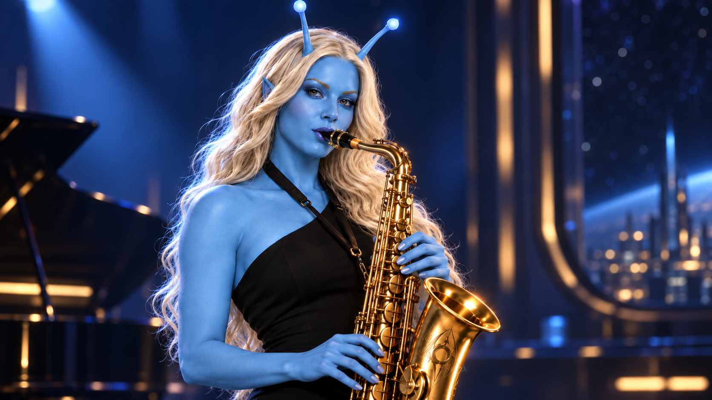

Yesterday’s Son · companion music video
Quiet Orbit
The retro-futurist lounge sequence built around ViVa’s piano, Neeh-La’s saxophone, St’vor’s bass, and the Bluecoat Lead Singer.

Yesterday’s Son · companion music video
The retro-futurist lounge sequence built around ViVa’s piano, Neeh-La’s saxophone, St’vor’s bass, and the Bluecoat Lead Singer.
